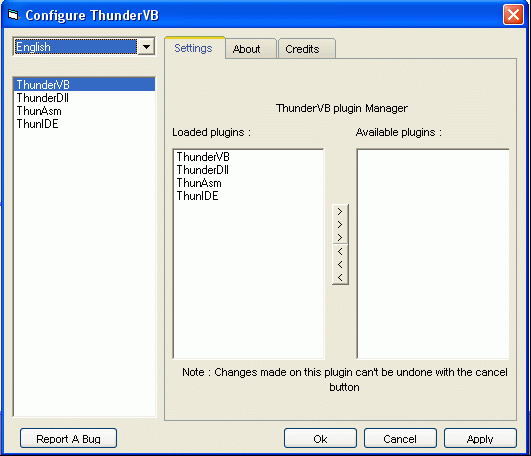

ThunderVB
ThunderVB is an add-in for VB6. ThunderVB let's you embed Asm and C instructions directly in you VB source programs. Furthermore ThunVB let's you create a true StdCall Dlls.
Moreover ThunVB can extend VB IDE to a basic Asm/C code editor. That means it can do syntax-highlighting of Asm/C keywords and supports intelli-sense for InlineAsm code as well.
See the screenshots bellow.

Now you might ask what is InlineAsm/C good for? Well, it depends only on your knowledges of Asm/C...
With InlineAsm/C you can speed up your VB apps, use MMX/SSE/3DNow! instructions in your graphic routines, call Cdecl/Pascal/FastCall functions, do low-level stuff (interrupts, I/O operations) and many more. As I said before it depends only on your knowledges...
Also with StdCall Dlls can be done many things. Yes, the Dlls compiled by ThunVB are true API Dlls not some ActiveX hybrids.
The Dlls can export functions, you can change Base-Address, change name of EntryPoint and the Dlls can contain GUI (Forms) as well.
I hope I don't have to say that the Dlls can be called from any language (C, Asm, Delphi...VB).
ThunderVB is quite hard to compile. We recommend you download installation package and install it. It's easier and faster and you won't have any problems with the compilation.
Get the installation package here.
Also there you can download InlineAsm/C and StdCall Dll code samples.
If you have any question, want new features, report bugs, then visit our forum.
notes:
- to compile InlineAsm code you will need MASM. You can get MASM here
- to compile InlineC code you will need VC++ compiler. If you don't have VC6++, then download Visual C++ Toolkit 2003 for free right here
- ThunderVB runs only on VB6 with Service Pack 6. Get SP6 here
Recommended OS : WinXP, Win2000 (not tested on Win2000 but it should work)
VB : VB6 with service pack 6
ThunderVB Development Team [ drkIIRaziel & Libor ]
Credits
ThunderVB's GUI is based on UserControls that we found on PSCode.
- UserControl : Author
- isButton : Fred.cpp
- UniLabel : Vesa Piittinen
- XTab : Neeraj Agrawal
- HzxyFrame, HzxyCheckBox, HzxyOption : Yin Huang